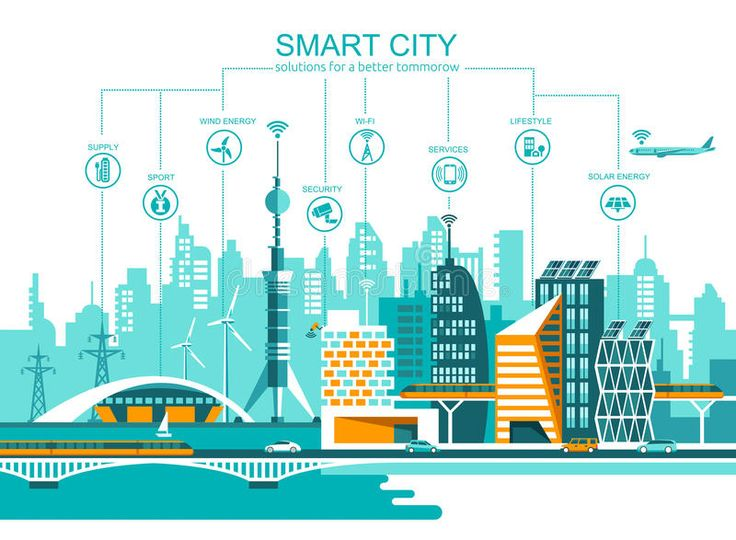

Kelompok 4
Mata Kuliah Kapita Selekta
Ilmu Komputer S2 - UNDIKSHA - 2025
2429101031
2429101032
2429101033
2429101034
2429101035
2429101036
2429101039
2429101040
"IoT adalah transformasi teknologi yang mengubah objek fisik menjadi ekosistem digital terhubung"
- IEEE IoT JournalMengumpulkan data dan melakukan tindakan
WiFi, Bluetooth, LPWAN, 5G
Penyimpanan dan analisis data
Aplikasi dan dasbor
Kota yang mengintegrasikan teknologi informasi dan komunikasi (TIK) untuk meningkatkan:
Pemerintahan dan layanan publik
Transportasi dan lalu lintas
Pengelolaan lingkungan dan energi
Keamanan dan kualitas hidup
Inovasi ekonomi digital
Pendidikan dan partisipasi warga
Sumber: International Case Studies of Smart Cities: Songdo, Republic of Korea, 2016
Sumber: On the Internet of Things, smart cities and the WHO Healthy Cities, 2014
Sumber: Cetak Biru Kota Cerdas Nusantara, 2023
"Edge computing memungkinkan respons real-time dan mengurangi beban jaringan dalam ekosistem IoT kota pintar"
- Cisco Annual Internet ReportKecerdasan terdistribusi di kota
Replika virtual kota untuk simulasi dan prediksi
Partisipasi warga dalam pengembangan solusi
IoT untuk ekonomi sirkuler dan keberlanjutan
Pengurangan emisi karbon
Penghematan energi
Pengurangan waktu perjalanan
Peningkatan kualitas hidup
"Kota pintar berbasis IoT bukan sekadar tentang teknologi, tetapi tentang meningkatkan kualitas hidup warga"
- World Economic ForumPemanfaatan IoT dan AI, seperti Jaringan Saraf Tiruan, dalam sistem deteksi dan manajemen banjir untuk meningkatkan akurasi prediksi, pemantauan real-time, dan ketahanan perkotaan.
Sumber: Sengupta Srinjoy (2024). "IoT-Based Flood Detection and Management Systems in Urban Areas".
DOI: https://doi.org/10.48314/ramd.v1i2.53
Penelitian tentang pengembangan infrastruktur lampu jalan pintar berbasis IoT yang mengintegrasikan lampu LED, sensor pintar, dan jaringan komunikasi untuk menghemat energi, meningkatkan keamanan, dan mendukung keberlanjutan di kota pintar.
Sumber: Khemakhem Siwar & Krichen Lotfi (2024). " A comprehensive survey on an IoT-based smart public street lighting system application for smart cities".
DOI: https://doi.org/10.1016/j.fraope.2024.100142
Integrasi IoT dan kecerdasan buatan untuk optimasi layanan publik seperti manajemen lalu lintas, pengelolaan sampah, distribusi energi, dan peningkatan keselamatan di kota pintar.
Sumber: Bhaduri Moitreyee (2025). "AI and IoT Solutions for Efficient Public Service Delivery in Smart Cities".
DOI: https://doi.org/10.22105/scfa.v2i1.41
Pengembangan framework keamanan privasi untuk melindungi infrastruktur IoT kota pintar dari ancaman siber dengan skema dua tingkat, deteksi intrusi, dan integrasi blockchain.
Sumber: Kumar Prabhat, et al. (2021). "PPSF: A Privacy-Preserving and Secure Framework using Blockchain-based Machine-Learning for IoT-driven Smart Cities".
DOI: https://doi.org/10.1109/TNSE.2021.3089435
IoT menjadi tulang punggung transformasi kota konvensional menjadi kota pintar
Integrasi teknologi harus berpusat pada kebutuhan warga
Pendekatan holistik melibatkan aspek teknologi, sosial, dan kebijakan
Keberlanjutan menjadi faktor kunci keberhasilan jangka panjang
Indonesia memiliki potensi besar untuk adopsi IoT dalam pengembangan kota pintar

Teknologi IoT mengubah cara kita hidup, bekerja, dan berinteraksi di lingkungan perkotaan
Kelompok 4
Mata Kuliah Kapita Selekta
Ilmu Komputer S2 - UNDIKSHA - 2025